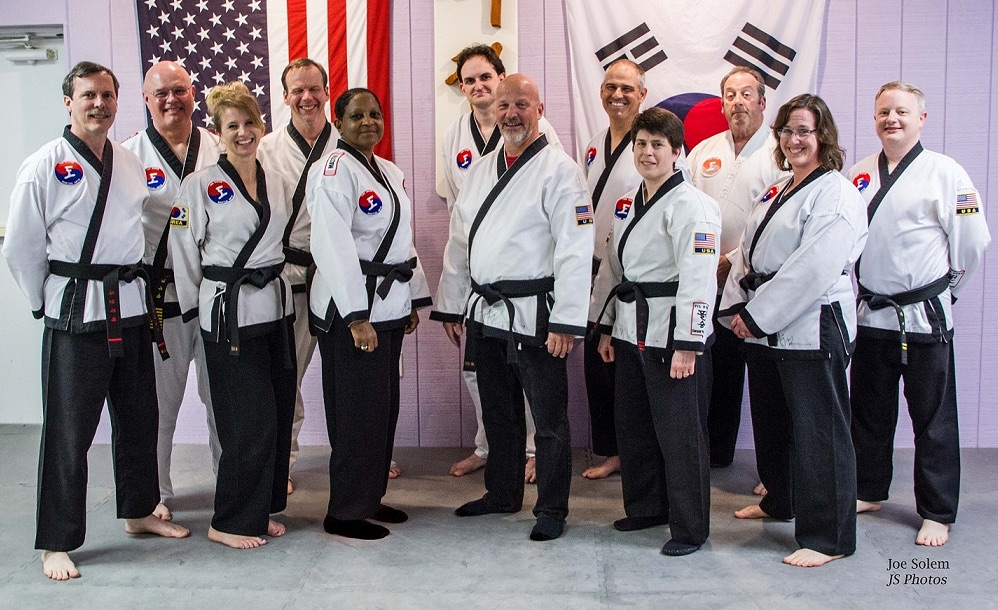
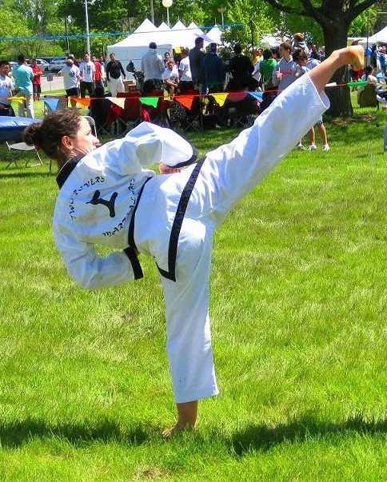
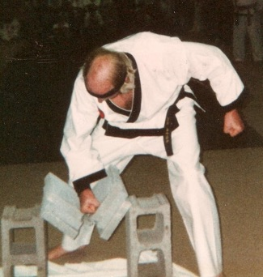
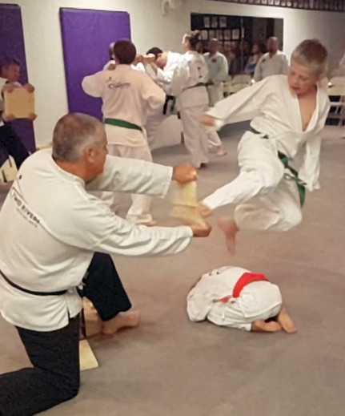
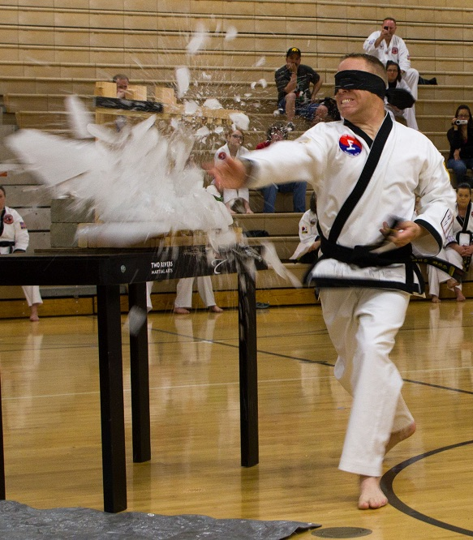
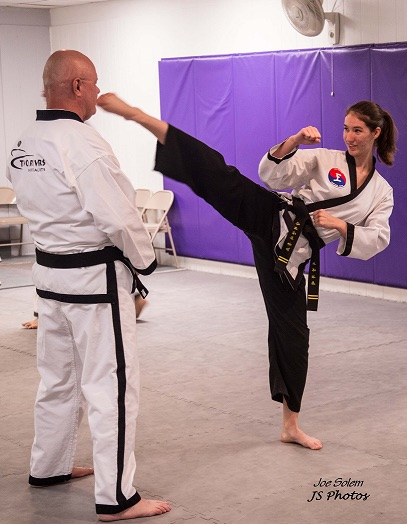

Two Decades Later
Two Rivers Martial Arts - Two Decades Later
By Master Dwayne Ferguson
April 2021
For 23 years Two Rivers Martial Arts has been an experiment in martial arts self-governance, a unique approach for a traditional Tae Kwon Do school. Two Rivers has no headmaster and no owner. Instead, it is an IRS 501(c)(3) nonprofit corporation with all black belts as corporate members. Authority and decision-making are shared and under the direction of a board of directors elected by all active black belt members. Tasks and responsibilities are distributed among unpaid volunteer black belts who teach classes, run tests, manage finances, maintain inventory, make repairs, and all the other functions needed to run a martial arts school. As described in the previous article, Two Rivers Martial Arts came to be because of a unique history traced back to the Eric Heintz Black Belt Academy and a group of black belts who simply wanted to continue training together when Master Eric Heintz retired.
{kind=link}

Board of Directors 2017: Front row - Mr. Don McDonald, Ms. Rochelle Douglass, Master Anita Williams, Master Roger Netsch, Ms. Jennifer Bailey (President), Ms. Cindy Lerch. Back Row - Master Dwayne Ferguson (Secretary), Grandmaster Brad Deaton, Mr. Robert Dale (Vice-President), Mr. Chris Lerch, Mr. Perry Comito, Mr. Kendall Bailey (Treasurer). Absent - Mr. Steve Goldstein
It has been almost a quarter century since Eric Heintz black belts sat in that dimly lit lobby and said, "Why not?” Today Two Rivers Martial Arts is alive and well. We have had branches come and go. We now have 7 branches located in central Iowa – Des Moines, Carlisle, Indianola, Pleasant Hill, Waukee, West Des Moines/Clive, and Winterset. We lost two of our original branches (Norwalk and Meredith Middle School) when enrollments dwindled and the instructors stopped teaching. Other branches have come and gone – Easter Lake, Weeks Middle School and Iowa Methodist Hospital in Des Moines, and Monroe Elementary in Monroe, Iowa. Black belts from our Bethany, Missouri branch opened schools in Trenton, Missouri, Lamoni, Iowa, and St. Joseph, Missouri. In 2014, Grandmaster Jung directed those Missouri-based schools to form their own school, and our sister school, Heritage Tae Kwon Do Academy, was born.
Since its inception, Two Rivers has developed a reputation as school
with excellent instructors and a top quality, affordable programs.
Some of Two Rivers’ accomplishments include:
{kind=link}
- Having 192 students earn their black belts and promoting many black belts to higher dan rankings. Two Rivers currently has 55 active black belts ranging from 1st dan through 8th dan. Over the past five years prior to the corona virus pandemic, the school has had an average enrollment of 175 color belt students.
- Maintaining low prices. Early on test fees for low blue belts and below were raised by $5.00 to match the price paid by high blue and brown belts, thus eliminating confusion over the varying amount of test fees. Family class fees rates were adjusted so that each additional family member pays $5.00 less. Class fees were increased by $5.00 a few years ago. Still Two Rivers’ prices continue to be about half what for-profit schools charge and comparable to Parks and Recreation programs that provide only two or three hours of class per week, not the daily class opportunities at Two Rivers.
- A Black Belt Manual to help standardize teaching across all branches.
- A self-defense program. Two senior black belt instructors, with the help of several other black belts, developed a self-defense program that is simple and effective and designed so that if a student needs to use it in a school setting, rules against fighting will not be violated.
-
Providing community support.
- Two Rivers has done numerous Tae Kwon Do demonstrations – at Celebrasian (Asian Heritage Festival), at a Des Moines pro-basketball half-time (now called the Iowa Wolves), the National Balloon Classic in Indianola, the Iowa State Fair, Indianola Bike Night, and at a number of schools, businesses, and community events.
- Self-Defense Classes and Demonstrations at Drake University, Carlisle Community, Valley Hgh School, DART public transportation employees, and numerous Des Moines businesses, churches, and other organizations.
- Supporting community drives and fundraisers – Amanda the Panda, Toys for Tots, Furry Friends Animal Rescue, food pantries, Warren County Fire Department, co-sponsoring Martial Artists for Children and Community fundraisers, and various other projects, walkathons, and charitable events.
- Hosting an annual Tae Kwon Tournament.
- Providing special classes and programs – Martial Spirit (a blended program incorporating several martial arts), Black Belt Youth Group, Kobudo Weapons Training, and Tai Chi.
- Surviving the financial impacts of the 2008 Financial Recession, the Covid-19 Pandemic economic fall out, and about 10 years ago, our own financial downturn caused by overextending school locations.
- Utilizing technology and social media (Internet website, Facebook and Twitter) for marketing and communication and by moving classes onto Zoom to adapt to the need for social distancing during the corona virus pandemic.
{kind=link}
Two Rivers Martial Arts was created so we could continue to practice Tae Kwon Do as taught by Master Heintz and to pass on what we've learned to the next generations of martial artists. Two Rivers has grown financially, from scrimping by the first year to stability. There is enough income to pay the bills, support three permanent location, and offer scholarships to students who otherwise could not afford to train. Annually scholarships total about $2,000 in foregone class and test fees.
{kind=link}

Ms. Diane Neubauer, 3rd dan, doing a slow motion high side kick.
Some of the black belts and instructors were interviewed to determine what is different about Two Rivers Martial Arts. They were asked what is special about Two Rivers, what are its advantages over a traditional for-profit school, and what are the disadvantages. The highlights of those conversations include:
- In one way or another, each black belt commented that Two Rivers is special because it is run by volunteers. There is no profit motive, and no one is teaching for a paycheck. Instructors teach because of their passion for Tae Kwon Do and commitment to the school and to instill those traits in students as they move up the ranks and become Two Rivers black belts.
- A Two Rivers black belt is part of something bigger than themselves. A new black belt made this observation explaining why he looked forward to earning his black belt and joining our community of black belts. Black belts in traditional martial arts schools may be proud of their schools and loyal to their headmaster, but becoming a Two Rivers black belt makes him or her a member of the corporation and responsible for the continued success of the school. The school is theirs to support and pass on to future generations.
- Two Rivers black belts refer to each other as their Tae Kwon Do family. It is a cohesive group held together by friendship and commitment to continued learning and sharing our martial art with new students. The group is all inclusive, accepting anyone at any age and any gender. One does not have to be young and male to succeed at Two Rivers. Women and men are treated equally. Those with handicaps are welcome and not discriminated against. Young and old participate together learning the same skills and the same intangibles that make martial artists special. Whether a student is ten or sixty, they can earn the same black belt. The only advantage youngsters get are smaller boards.
- Two Rivers has three grandmasters, four active master black belts, four retired masters, and one deceased master. Their Tae Kwon Do experience ranges from 35 years to 22 years. Two Rivers’ grandmasters and masters actively train with color belt students, something that is much less likely at a for-profit school run by one head master who teaches all the time.
- Two Rivers is not a black belt mill. The senior black belts work to maintain the high standards they learned at the Eric Heintz Black Belt Academy and pass those standards along to upcoming black belts. Instructors are generally frank and candid with students, telling them the truth about their progress rather than sugarcoating it. Instructors are supportive and do not put down students for their shortcomings. They let students know they are expected to do their best, at the same time knowing their students can accomplish more than they think they can. Two Rivers black belts know they have earned the right to wear a black belt.
- Board members, instructors, and black belts focus on what is best for the school, usually keeping their personal goals secondary to what is good for the school.
{kind=link}

Master Samuelson
Being a nonprofit corporation, governed by a board of directors, and run entirely by volunteers has its positives and negatives. Some of the advantages are:
- Potential immortality: Since no one individual owns and directs Two Rivers, it has the possibility of being “immortal.” As instructors and board members age and retire from Tae Kwon Do, younger black belts can step forward and continue running Two Rivers. The organization continues even as individuals come and go.
- Separation of teaching and running a business : In for-profit schools with a single headmaster, the owners handle both the business and teaching duties, splitting their time, energy and focus across all responsibilities. Two Rivers’ board of directors takes care of running the school as a business, and for the most part instructors focus on training their students in traditional Tae Kwon Do with minimal interference from the business side. While instructors may collect class fees and sell uniforms, they do not have to worry about paying bills, marketing and bringing in new students, filing forms with the state and federal government, buying insurance, maintaining inventory, and all those other responsibilities that go with running a business.
- Wide ranging expertise : The governing board has a much broader range of experience and expertise than any one individual headmaster can have. Two Rivers board members’ backgrounds have included: an MBA who is the chief financial officer for an area corporation, several teachers, physicians, a nurse, a Ph.D., small business owners, engineers, computer programmers, skilled craftsmen, a budget analyst, a social worker, government employees, and others with a variety of life experiences. That expertise has been applied to creating and maintaining our webpage, handling filing of taxes and government forms, making financial projections, helping others develop teaching skills, building and maintaining the physical plant, organizing projects, and fulfilling any need that arises.
- Underlying agreement to comply with the Board : The normative standard is that black belts and instructors will comply with the Board’s decisions even if they may not personally agree with a decision. The school’s founders created the expectation that all will go along with what the Board decides, and this shared agreement is passed along to each new generation of black belts. Without that agreement dissention and unwillingness to cooperate would develop.
- All voices are heard : All black belts and students are welcome to attend Board meetings and introduce ideas. They can ask the Board to consider their proposal, and while the Board may not accept the idea, it is listened to seriously. A traditional school run by a single headmaster is not likely to have that openness and acceptance; students most likely feel they should not suggest how the school could be run or improved. When the Board meets, board members “leave their belts at the door,” meaning that each Board member’s ideas and opinions will be respected. Each member has one vote with equal weight whether the individual is first dan or eighth dan.
-
Advantages of being run by volunteers
:
- Means a high level of commitment from black belts : By volunteering, instructors and board members show they are strongly committed to Two Rivers and Tae Kwon Do. Black Belts banded together and committed a great deal of their time and energy, setting a high standard for those who became their students. Younger black belts are inspired to continue the volunteer culture and picking up responsibilities and carrying on the school as senior black belts age out.
- Volunteers means no payroll costs : As a nonprofit corporation run by volunteers, instructors and others teach and manage other duties out of their passion for Tae Kwon Do and their commitment to something larger than themselves, Two Rivers Martial Arts. With no payroll to cover, Two Rivers keeps its class and test fees low.
- No jealousy from lesser rewards : Two Rivers instructors are unpaid volunteers. If they were paid, then bad feelings among instructors could develop if all were paid an equal amount. Those with many more students would generate much more in class and test fees but not be rewarded comparably. Conversely, if instructors were paid on a per student basis, then those who spend just as much time teaching but happen to be in a community with fewer students would feel slighted. By being unpaid volunteers, everyone gives what they can to the school, and no one receives more or less than anyone else.
- Instructors focus on teaching traditional Tae Kwon Do : Being an unpaid volunteer gives instructors the freedom to focus on teaching their students to be good martial artists and maintain high standards. Classes and requirements do not need to be dumbed down just to keep parents happy or to let unqualified students progress so they will keep paying class fees. With low operations costs, instructors do not have to worry about losing income by maintaining standards and losing unfit students.

Adam Schmith doing a flying sidekick.
{kind=link}

Mr. Jason Harris, 2nd dan, breaking ice with a knife hand strike.
{kind=link}
There are also some disadvantages to being a nonprofit school run by a board of directors. For example:
- Slow decision-making : Decisions can take longer to make. Issues must be brought before board, discussed, and then voted on. At a traditional martial arts school, a single head instructor decides and moves on. Some senior black belts do lament not being able to just ask Master Heintz and get an answer.
- No single charismatic leader : The head instructor at a traditional martial arts school tends to be a charismatic leader for the school. Older students fondly recall Master Heintz in this way. Grandmaster Jung is honored in that way by his students. Two Rivers has several masters, and while each is respected for his or her skills and abilities, no one individual stands out as the single leader. Admiration is diluted as it is shared among a number of black belts instead of being focused on one individual.
- Restrictions on use of funds : As a 501(c)(3) nonprofit, the assets do not belong to the black belts running the school and cannot be used for their personal benefit. Revenues must be used to achieve the nonprofit’s purpose stated in its Articles of Incorporation and By-Laws in order to maintain Two Rivers’ tax-exempt status. Occasionally, black belts have wanted to give worthy individuals money to help them through a tough financial situation. That is not permitted. The owner of a for-profit school does not have those restrictions and can spend revenues as he or she sees fit.
- No profit motivation : An individual dojang owner strives to make a profit. His livelihood depends on promoting the school and bringing in new students, working long hours to make the school a success, and generally growing his bank account. Unpaid volunteers do not have a profit motivation, and it can be difficult to convince volunteers to do the less desirable but necessary tasks needed to run the school. For example, volunteer instructors want to teach class and interact with students but can be difficult to persuade to report necessary data and class roster information needed to run the business side of the school. Volunteers can be difficult to motivate to implement changes, such as a new self-defense program, when they are satisfied teaching the way they always have. The for-profit school owner is willing to add new programs if it brings in new students and increases revenue.
- Conflict with traditional values : The Board of Directors has tried to adhere to the notion that each board member has an equal voice and equal vote. It is important that all board members have an equal opportunity to express their opinions and share their expertise. Tae Kwon Do is militaristic, and those of higher rank expect deference. With a difference of opinion, the senior belt can be insulted by the upstart junior belt’s impudence in putting forth his or her conflicting opinion, or the junior belt may feel squashed when their opinion is dismissed by the senior belt and the discussion moves on. In other instances, a junior belt may disagree with a tradition, not understanding its importance and relevance to the culture of the organization. If they can argue persuasively, some valuable traditions can be pushed to the side and lost. Still, organizations evolve and hopefully improve. Bringing in new board members with new ideas can promote growth and positive change.
{kind=link}

Ms. Alex Lerch, 2nd dan, kicking a short straw from Master Ferguson's mouth.
Two Rivers has survived and thrived longer than some of its founding members thought possible. Its people make it special through their dedication to Two Rivers and willingness to volunteer their time and energy to pass along the lessons originally learned at the Eric Heintz Black Belt Academy to a new generation of martial artists. As an organization, Two Rivers is open to taking a new path and finding new ways to pass on traditional Tae Kwon Do.
About the Author:
{kind=link}
Master M. Dwayne Ferguson is a 7th dan black belt with 32 years of Tae Kwon Do experience and 20 years as an instructor. Master Ferguson holds a Ph.D. in sociology from the University of Iowa and recently retired after 26 years as a nonpartisan senior budget analyst for the Iowa General Assembly.